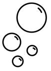
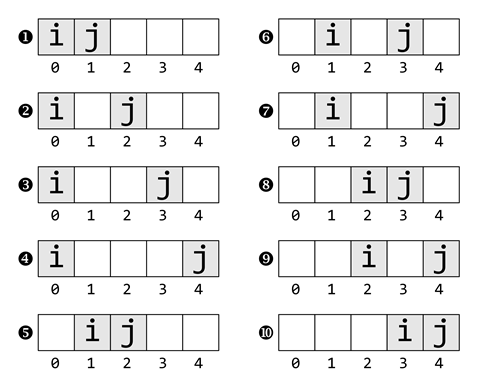
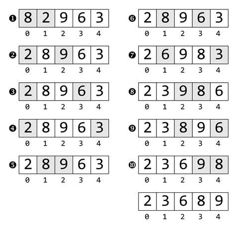

Prev - #41 ROT 13 Encryption | Table of Contents
bubbleSort([2, 0, 4, 1, 3]) → [0, 1, 2, 3, 4]

Bubble sort is often the first sorting algorithm taught to computer science students. While it is too inefficient for use in real-world software, the algorithm is easy to understand. In this last exercise of the book, we’ll implement this basic sorting algorithm.
Exercise Description
Write a bubbleSort() function with a
list parameter named numbers. The function
rearranges the values in this list in-place. The function also returns the
now-sorted list. There are many sorting algorithms, but this exercise asks you
to implement the bubble sort algorithm.
The objective of this exercise is to write a sorting algorithm,
so avoid using Python’s sort() method or sorted() function as that would defeat the purpose of the
exercise.
These Python assert statements stop
the program if their condition is False. Copy them
to the bottom of your solution program. Your solution is correct if the following
assert statements’ conditions are all True:
assert bubbleSort([2, 0, 4, 1, 3]) == [0, 1, 2, 3, 4]
assert bubbleSort([2, 2, 2, 2]) == [2, 2, 2, 2]
Try to write a solution based on the information in this description. If you still have trouble solving this exercise, read the Solution Design and Special Cases and Gotchas sections for additional hints.
Prerequisite concepts: lists, for
loops, range() with two arguments, nested loops,
swapping values
Solution Design
The bubble sort algorithm compares every pair of indexes and
swaps their values so that the larger value comes later in the list. As the
algorithm runs, the larger numbers “bubble up” towards the end, hence the algorithm’s
name. We’ll use variables named i and j to track the two indexes whose values should be compared
with each other. The pattern behind the movements of i
and j are easier to see when visually laid out, as
in Figure 42-1 which uses a 5-item numbers list as
an example:

Figure 42-1: The pattern of i and j’s movement: j starts after i and moves to the right, and when it reaches the end, i moves right once and j starts after i again.
Notice the similarity between the movement of i and j to the nested for loops in Project #26 “Handshakes.” As the algorithm
runs, j starts after i
and moves to the right, and when it reaches the end, i
moves right once and j starts after i again.
If you look at the overall range of i
and j, you’ll see that i
starts at index 0 and ends at the second to last
index. Meanwhile, j starts at the index after i and ends at the last index. This means our nested for loops over the numbers list
parameter would look like this:
for i in range(len(numbers) - 1):
for j in range(i, len(numbers)):
Inside the inner loop, the numbers at indexes i and j are compared, and if
the number at index i is larger than the number at
index j, they are swapped. Figure 42-2 shows the
state of a list [8, 2, 9, 6, 3] as the bubble sort
algorithm swaps the two numbers after being compared at each step.

Figure 42-2: The steps of the bubble sort algorithm as it sorts [8, 2, 9, 6, 3].
At the end of these two nested for
loops, the numbers in the list will have been swapped into sorted order.
Special Cases and Gotchas
Sorting algorithms are an excellent introduction to the computer science topic of data structures and algorithms. And bubble sort is a good introduction to sorting algorithms. But the chief weakness of bubble sort is that it’s incredibly inefficient. While it can quickly sort lists of a few dozen or few hundred values, it becomes infeasible for sorting lists of thousands or millions of values. For this reason, real-world applications never use bubble sort.
Now try to write a solution based on the information in the previous sections. If you still have trouble solving this exercise, read the Solution Template section for additional hints.
Solution Template
Try to first write a solution from scratch. But if you have difficulty, you can use the following partial program as a starting place. Copy the following code from https://invpy.com/bubblesort-template.py and paste it into your code editor. Replace the underscores with code to make a working program:
def bubbleSort(numbers):
# The outer loop loops i over all but the last number:
for i in range(len(____) - ____):
# The inner loop loops j starting at i to the last number:
for j in range(____, len(____)):
# If the number at i is greater than the number at j, swap them:
if numbers[i] ____ numbers[j]:
numbers[i], numbers[j] = numbers[____], numbers[____]
# Return the now-sorted list:
return numbers
The complete solution for this exercise is given in Appendix A and https://invpy.com/bubblesort.py. You can view each step of this program as it runs under a debugger at https://invpy.com/bubblesort-debug/.
Further Reading
If you want to see what a first-year computer science student would study in a data structures and algorithms course, Coursera has a free online course called “Algorithmic Toolbox” at https://www.coursera.org/learn/algorithmic-toolbox.